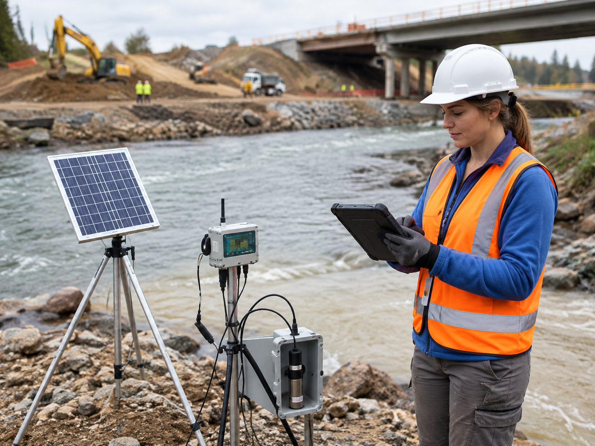

Air Quality & Dust Control
Optical telemetry sensors for particulate matter PM10 / PM2.5 with automated alert triggering and instant misting activation on haul roads.
Centralize, analyze, and automate environmental monitoring in real time. Prevent regulatory penalties and stop-work orders through continuous IoT telemetry for air, noise, water, and geo-referenced incident management on site.
Comprehensive ecosystem engineered for road builders, concessionaires, and environmental consultants committed to operational excellence.
Optical telemetry sensors for particulate matter PM10 / PM2.5 with automated alert triggering and instant misting activation on haul roads.
Continuous sound level telemetry in decibels (dBA) across day/night shifts with geo-synchronized alerts.
Submersible multiparameter probes monitor streams, drainage outfalls, pH, turbidity, dissolved oxygen and environmental parameters.
Satellite-tracked biological crossings, automated geofencing of sensitive buffer zones and environmental event tracking.
Ensure continuous project operations by minimizing administrative shutdown risks and maximizing field crew efficiency.

100% ComplianceInstant, preventive detection of any deviation from Maximum Permissible Limits (MPL) and environmental standards, triggering corrective workflows before formal audit inspections.
✓ Immediate mitigation in under 15 minutesInstant consolidation of field logs, instrument calibrations, and official compliance reports ready for regulatory bodies and transport authorities.
✓ Save up to 85 monthly office hoursDirect task assignment to field crews with mandatory geo-tagged photo capture and digitally signed closeout reports directly from the offline mobile app.
✓ Chain-of-custody tracking per road station (KP)Supported by a dedicated advisory board of environmental engineers and road infrastructure specialists, offering technical-legal guidance during inspections.
✓ Audit simulation and 24/7 expert reviewCloud-native IoT architecture purpose-built for the topographic and climatic rigor of major civil engineering projects.
Proven success across highways, logistics corridors and complex civil works.
“EcoRoad reduced our report preparation time for environmental authorities and made project information easier to manage.”
“The automated alert engine allowed us to identify environmental risks much faster during field operations.”
“Real-time environmental sensor integration gives our project team better visibility over field conditions.”
Select the SaaS tier tailored to your highway consortium or environmental consultancy.
Ideal for routine maintenance projects or short highway stretches requiring standard monitoring.
For highway supervision and concessionaire firms demanding full scalability and multi-user management.
For national-scale infrastructure consortia with custom integration and dedicated audit requirements.
Meet the multidisciplinary team behind EcoRoad's environmental telemetry platform.
Software Engineering student focused on web technologies, project collaboration and scalable digital solutions.
Developer focused on efficient and scalable applications using modern programming technologies.
Team member focused on project management, development and implementation of digital solutions.
Developer interested in web and mobile development, software architecture and innovation.
Software Engineering student committed to collaboration, personal growth and digital product development.
Request a personalized 20-minute session with our road telemetry engineers and discover how to eliminate non-compliance risks.